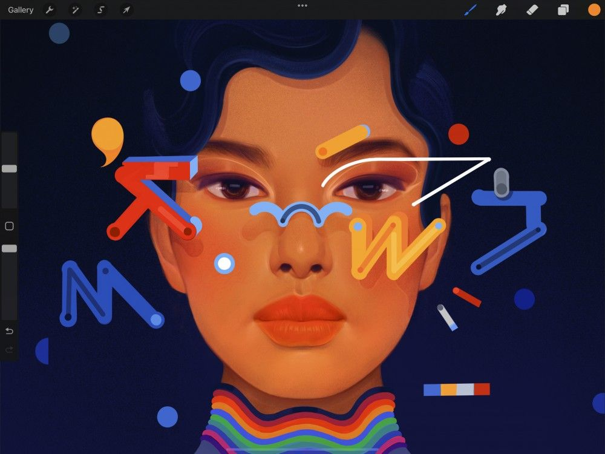
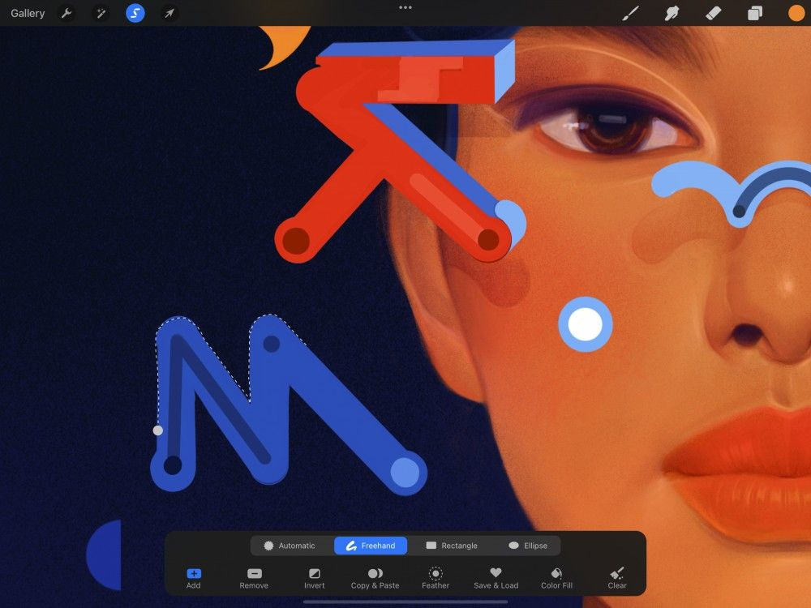
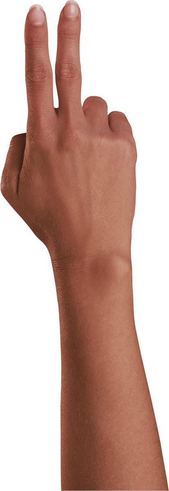
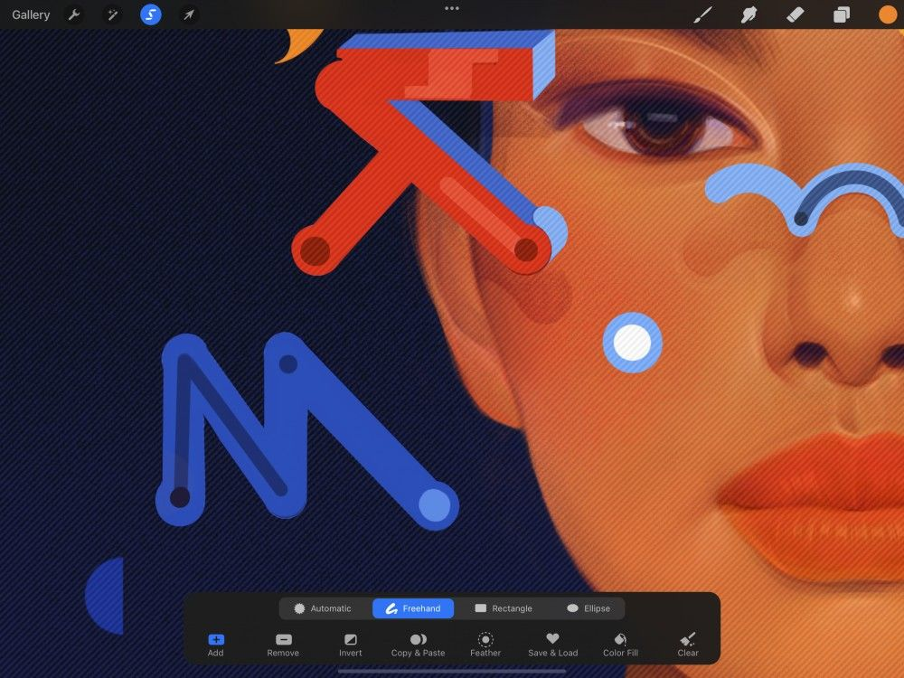
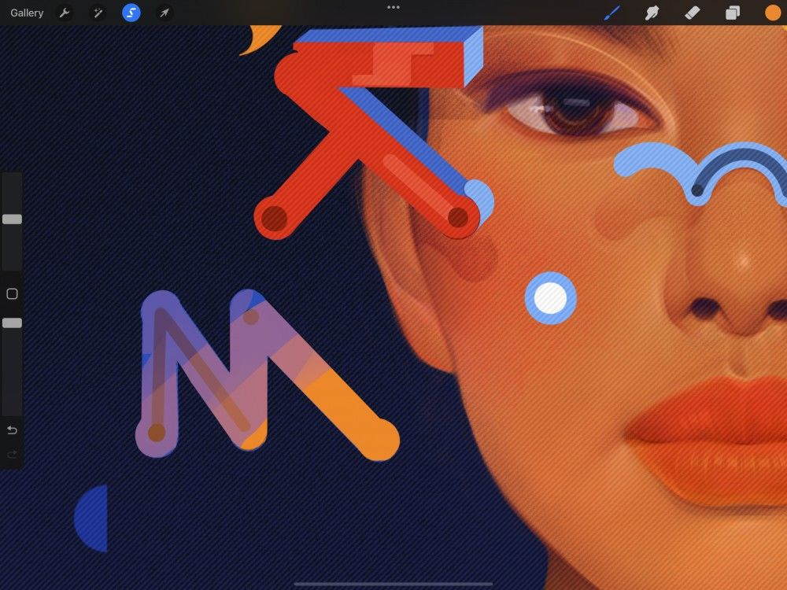

📖 Đã dịch sang tiếng Việt. Thuật ngữ chuyên môn giữ tiếng Anh — rê chuột để xem nghĩa (tooltip).
Interface and Gestures
Dùng Selections (vùng chọn) để tách riêng các phần tác phẩm nhằm vẽ lại, chỉnh sửa, biến đổi và hơn thế nữa.
Cử chỉ
Với một vùng chọn đang hoạt động, bạn có thể bảo vệ các phần quan trọng của tác phẩm.


Selections (vùng chọn) cho phép bạn thực hiện nhiều chỉnh sửa trên một vùng tách riêng của tác phẩm. Vẽ, pha màu, tẩy, tô màu và biến đổi vùng đã chọn mà không ảnh hưởng đến bất kỳ thứ gì bên ngoài.
Create
Chạm Selection button (nút vùng chọn) ở menu trên cùng. Nó sẽ mở Selection toolbar (thanh công cụ vùng chọn), cung cấp nhiều cách để xác định vùng bạn muốn chỉnh sửa. Khám phá các chế độ này chi tiết hơn bên dưới.
Đường chấm chuyển động hiển thị ranh giới của bất kỳ vùng chọn nào bạn tạo.


Undo (hoàn tác) và Redo (làm lại)
Khi đang vẽ vùng chọn, chạm hai ngón để Undo (hoàn tác) thao tác vừa rồi, hoặc chạm ba ngón để Redo (làm lại) .

Commit
Chạm công cụ bất kỳ để xác nhận vùng chọn. Lúc này, thay vì đường chấm, vùng ngoài vùng chọn sẽ bị che mờ. Nó hiện dạng các đường chéo di chuyển bán trong suốt.

Edit
Khi một vùng đã được chọn, bạn có thể vẽ , pha màu , tẩy , tô màu và biến đổi vùng đó. Bạn có thể làm việc này mà vẫn giữ nguyên mọi thứ xung quanh không bị ảnh hưởng. Chạm công cụ bạn muốn để bắt đầu. Cả Selection button (nút vùng chọn) và nút bạn vừa chạm sẽ được tô sáng.

Cancel
Để hủy vùng chọn đã tạo và quay lại tác phẩm, chạm lại Selection button (nút vùng chọn).
Giao diện
Chọn nội dung bằng một nét vẽ tay liền mượt. Chạm để tạo vùng chọn đa giác. Dùng hình chữ nhật hoặc elip để lấy nhanh vùng bạn cần. Hoặc chỉ cần chạm, và để công cụ Automatic (tự động) chọn làm việc đó cho bạn.
Selection Button (nút vùng chọn)
Trên thanh menu phía trên cùng, bạn sẽ thấy biểu tượng dải băng. Đó chính là Selection button (nút vùng chọn).
Khi chạm Selection button (nút vùng chọn), nó sẽ mở Selection toolbar (thanh công cụ vùng chọn).
Các nút Selection Mode (chế độ vùng chọn)
Các nút trên Selection toolbar (thanh công cụ vùng chọn) ở cuối màn hình cung cấp bốn cách khác nhau để chọn nội dung.
Khi bạn mới kích hoạt Selection, chế độ mặc định là Freehand (tự do). Đây là một trong bốn phương pháp thao tác nội dung. Khám phá sâu cả bốn tùy chọn trong các phần Handbook tiếp theo.
- Chế độ Automatic (tự động) chọn toàn bộ một vùng chỉ với một chạm. Giống như ColorDrop, bạn có thể đổi ngưỡng của vùng chọn này bằng cách kéo ngón tay.
- Chế độ Freehand (tự do) cho phép bạn tự tay vẽ vùng chọn bằng một nét liền mượt, hoặc chạm để tạo đường đa giác. Bạn có thể kết hợp cả hai cách để chọn nhanh và chính xác.
- Các chế độ Rectangle (chữ nhật) và Ellipse (elip) cho phép bạn tạo vùng chọn nhanh. Việc này thực hiện bằng cách kéo một hình bao quanh vùng nội dung.
Pro Tip
Switch between modes for even more control and flexibility while crafting selections.
Xây dựng hình vùng chọn phức tạp theo từng giai đoạn bằng cách thêm vùng vào vùng chọn hiện có.
Add (thêm) hoạt động khác nhau tùy thuộc vào phương pháp chọn bạn đang dùng.
Trong các chế độ Freehand (tự do), Rectangle (chữ nhật) và Ellipse (elip), chạm Add (thêm) một lần cho phép bạn vẽ và thêm các vùng chọn khác vào vùng chọn hiện có.
Trong Freehand (tự do), chạm Add (thêm) lần thứ hai sẽ đóng các vòng lặp nếu chúng chưa hoàn tất.
Trong Automatic (tự động), nút Add (thêm) bị mờ vì chức năng này đã được tích hợp sẵn trong chế độ đó. Chạm vào bất kỳ vùng nào của ảnh bất cứ lúc nào để thêm vào vùng chọn Automatic của bạn.
Nếu bạn đã chọn quá nhiều, hoặc vùng chọn có hình sai, hãy thu hẹp lại bằng Remove (xóa bớt).
Chức năng này trái ngược với Add (thêm). Khi đã tạo vùng chọn, hãy dùng Freehand (tự do), Rectangle (chữ nhật), hoặc Ellipse (elip) để chọn vùng muốn chỉnh sửa, rồi chạm Remove (xóa bớt).
Đảo ngược trong-ngoài bằng Invert (đảo ngược).
Nếu bạn đã tạo vùng chọn, nhưng muốn xóa phần đối lập với vùng chọn, hãy chạm Invert (đảo ngược) để đảo bên trong và bên ngoài của vùng chọn. Chạm lại để chuyển về như cũ.
Copy & Paste (sao chép & dán)
Một chạm đơn giản mang đến một trong những tính năng được dùng nhiều nhất trong hội họa số.
Khi đã hài lòng với vùng chọn, hãy chạm Copy & Paste (sao chép & dán). Nội dung đã chọn sẽ được nhân bản sang một lớp mới có nhãn From selection (từ vùng chọn).
Mặc định, các vùng chọn có cạnh sắc — nhưng đôi khi bạn muốn hiệu ứng mềm hơn.
Khi đã tạo vùng chọn, hãy chạm Feather (làm mờ cạnh) để mở thanh trượt khuếch tán các cạnh vùng chọn. Ở 0%, cạnh giữ nguyên độ sắc. Khi bạn tăng phần trăm lên, các cạnh vùng chọn sẽ mềm hơn. Bạn có thể xem bản xem trước vùng chọn thay đổi theo thời gian thực khi điều chỉnh thanh trượt.
Save & Load (lưu & tải)
Lưu các vùng chọn bạn dùng đi dùng lại, và gọi lại chúng bất cứ khi nào cần.
Chạm Save & Load (lưu & tải), sau đó chạm nút + ở góc trên bên phải của bảng Selections hiện ra để lưu vùng chọn hiện tại.
Chạm một vùng chọn trong danh sách để tải lại vùng chọn bạn đã lưu trước đó.
Khám phá Save & Load (lưu & tải) sâu hơn trong Advanced Selections (vùng chọn nâng cao) .
Color Fill (tô màu)
Tô một vùng chọn cho bất kỳ Selection Mode (chế độ vùng chọn) nào bằng một màu.
Chạm Color Fill (tô màu) để Paint Bucket (xô tô màu) chuyển sang xanh, sau đó chạm một Selection Mode (chế độ vùng chọn). Tạo vùng chọn để tự động tô bằng màu hiện tại. Bất kỳ vùng chọn thêm nào được tạo khi *Color Fill * đang bật cũng sẽ được tô bằng màu hiện tại.
Nếu ở chế độ Freehand Selection (vùng chọn tự do), chạm nút tròn để đóng vùng chọn và tô bằng màu hiện tại.
Chạm Color Fill (tô màu) lần thứ hai để thoát.
Pro Tip
Changing your current color before exiting Color Fill will change the color of any selection that has been previously filled. This is a simple way to experiment with color choice.
Đôi khi bạn cần bắt đầu lại từ đầu.
Chạm Clear (xóa sạch) để bỏ vùng chọn hiện tại. Nếu bạn lỡ tay làm thế, chạm hai ngón sẽ hoàn tác Clear và khôi phục vùng chọn.
Still have questions?
If you didn't find what you're looking for, explore our video resources on YouTube or contact us directly. We’re always happy to help.